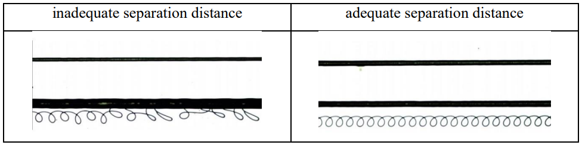
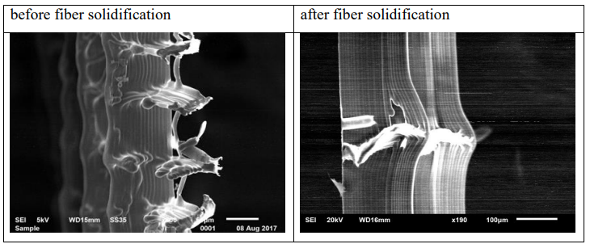
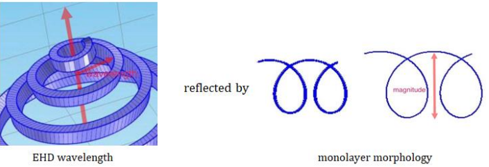
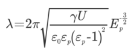
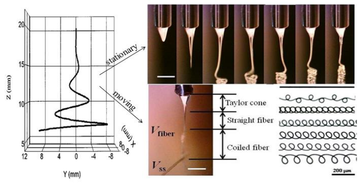
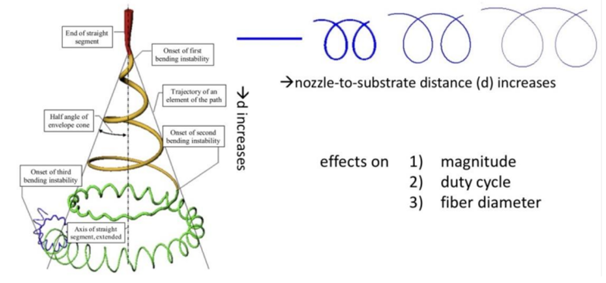
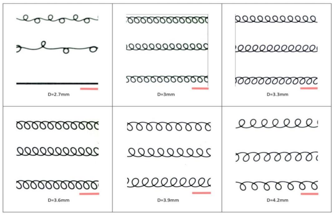
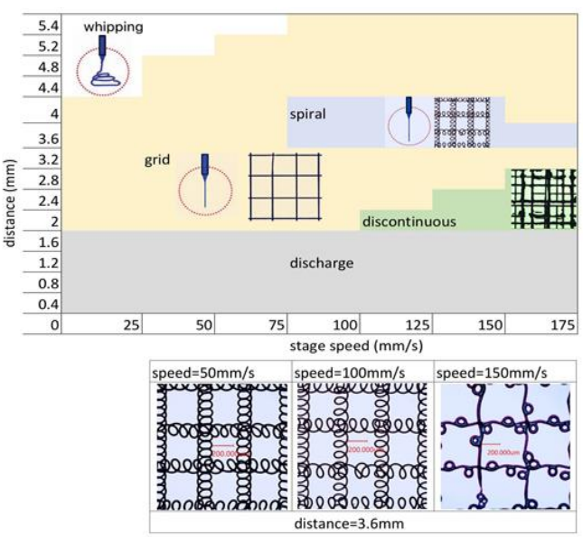
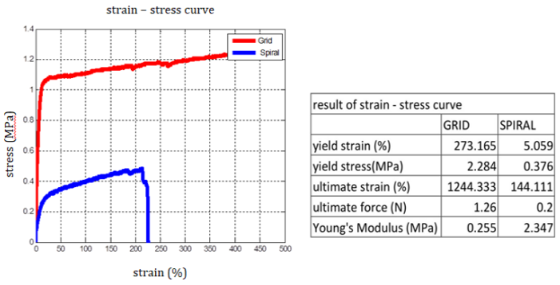

Results
Fiber solidification
Fiber solidification is essential to fabricate scaffolds for uniformly alignment and accuracy porosity calculation.
Poor fiber solidification manifests two features, which are fiber merging and imprecise fiber deposition, which can be attributed to short elongated time refined by short nozzle-to-substrate distance and Coulomb repulsion respectively.
• Effect of Viscoelasticity
For Taylor cone zone, the increment in elasticity can widen the range of applied voltage and has no interference in the range of flow rate.
For Taylor cone zone, the increment in viscosity can widen the range of feed rate for low concentrated PCL solution but stabilize the range of voltage for high concentrated PCL solution.
Elasticity is reflected by molecular weight and solvent viscosity and viscosity is controlled by changing polymer concentration.
For example, when the diameter of Taylor cone is large, viscosity displays greater effect than elasticity does, which promotes the jet to shrink for a smaller diameter.
Further optimization can be realized by increasing solution concentration, leading to the increment in viscosity, which further reduce jet diameter.
Small jet diameter indicates large surface area to volume ratio, implying a high evaporation rate during the limited nozzle-to-substrate distance.
However, in the case of low viscosity, substrate surface property has comparatively significant effect on fiber diameter.
• Separation Distance and Interval between Fibers
Due to the insufficient evaporation of acetic acid on each fiber, like charges on fibers demonstrate the effect of Coulomb repulsion.
For example, fibers depart from the same position are supposed to convene to form the same line, but they are gradually repulsed from each other to form parallel lines.

Fig 6.4 example of Coulomb repulsion (taken by OM)
Grid scaffolding
After utilizing above techniques, fiber solidification is improved. After the operating process factors (feed rate & voltage) matching the intrinsic property (viscoelasticity in terms of molecular weight & concentration) of PCL solution, fiber solidification can be achieved.
In addition to providing a better environment for cell attachment and proliferation, scaffolds with highly aligned fibers possess a greater level of mechanical anisotrophy, which is preferred in tissue engineering.
Grid scaffolds with pore size equals to 50 um can be achieved by accumulating layers by offsetting.

Fig 6.5 improvement in fiber solidification (tanken by SEM)
Development of bending instability of Taylor Cone jet
The development of bending instability of Taylor cone charged jet is the cause of diverse fiber characteristics.

Fig 6.6 monolayer morphology as a reflection of EHD wavelength
EHD wavelength can be described in the general equation.

Besides polymer surface tension, permittivity in vacuum, liquid dielectric, and electric field strength in polymer, applied voltage, as the most accessible process factor, is involved.
Intensive electric field in terms of high D.C. voltage supply can accelerate the development of bending instability.
The bending instability of electrified PCL solution is triggered by whipping of lateral velocity and position of the jet.
The repulsion of charges elongates the jet in the path of spiral pattern until the end of jet is deposited on the substrate.
Monolayer scaffolding is the result of fiber deposition on the substrate.
The morphology of fiber deposition is the combination of fiber whipping speed (Vfiber) and stage speed (Vss).
As the stage is stationary, the accumulation of the coiled pattern demonstrates bending instability of charged jet.
As the stage is moving at a constant speed, the collected fiber shows the exact fiber morphology at the certain nozzle-to-substrate distance.
The electric force exerted on PCL solution forms Taylor cone.
The intensive force overcomes the surface tension of Taylor cone, so that a straight fiber is stretched.
The intrinsic property of PCL solution whips the straight fiber so that the fiber transforms into a coiled fiber, so called "fluid rope-coil" by Mahadevan et. al.
From the periodic fiber deposition, the difference in magnitude, duty cycle, and fiber diameter can be told.

Fig 6.7 fiber bending instability and monolayer scaffolding formation
Spiral scaffolding
Monolayer morphology characteristic is the effect of diverse fiber characteristic and multilayer morphology characteristic is the application of diverse fiber characteristic.
• Monolayer morphology characteristic
When nozzle-to-substrate distance increases and other conditions remain the same, the effect of bending instability can be represented by monolayer morphologies in terms of magnitude, duty cycle, and fiber diameter.
Monolayer morphologies are varied as nozzle-to-substrate distance increase while the other process factors remain constant.

Fig 6.8 anticipation of fiber characteristics as nozzle-to substrate distance increases

Fig 6.9 monolayer morphologies with varying nozzle-to-substrate distance (taken by OM)
• Monolayer fabrication summary by varying process factors
The monolayer morphology can be summarized based on varying process parameters (nozzle-to-substrate distance and stage speed).
When nozzle-to-substrate distance is below 1.6mm, corona discharge cannot be eliminated.
When nozzle-to-substrate distance is beyond 4mm, the deposited fiber is not uniform and periodic since the whipping exceeds 1st bending instability.
Fiber deposition includes two or more cycles is featured of low controllability during fabrication.
When Vss cannot match Vfiber in terms of high moving speed, the deposited fibers are discontinuous, which is less useful in cell culture.
The range for generating grid scaffolds (straight fiber) and spiral scaffolds (coiled fiber) is important as the standard of calibration.
Among the effective fabricating region (grid and spiral), at lower nozzle-to-substrate distance, 2.7 mm < D < 4.2 mm, spiral scaffolds can be generated when the applied voltage is in the range of 3.1kV and 3.2kV.
The three samples taken by optical microscope indicates that spiral scaffolds become sparse and scattered with the increment in stage speed.

Fig 6.10 monolayer morphologies with varying nozzle-to-substrate distance (taken by OM)
• Multilayer morphology characteristics
Spiral scaffolds are featured of high porosity, which can be beneficial to cell proliferation due to the convenience of nutrition transmission.
Spiral scaffolding performs better than grid scaffolding since high porosity benefits cell attachment.
The typical characteristics of multilayer spiral scaffolds with "peak" formation can be interpreted by the development of bending instability of charged jet.

Fig 6.11 monolayer morphologies with varying nozzle-to-substrate distance (taken by OM)
• Mechanical Property Evaluation
A strain-stress curve can be divided into 3 parts: elastic region, plastic region, and break region.
In elastic region, stress is proportional to strain.
Young's elastic Modulus is defined as the ratio of stress to strain.
The threshold value from elastic region to plastic region can be described as yield strain and yield stress.
The threshold value from plastic region to break region can be expressed as ultimate strain and ultimate force.
The grid scaffold has a very high yield point and a very high break point, indicating high extension tolerance and great ductility.

Fig 6.12 strain-stress curve and data for grid and spiral